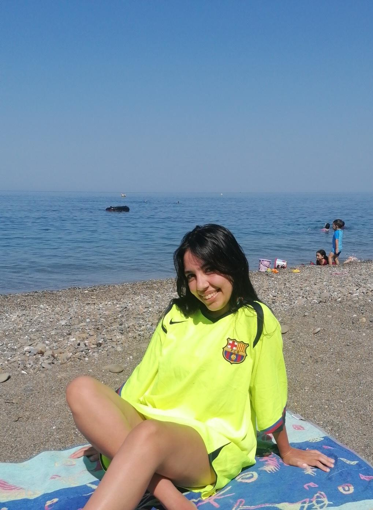
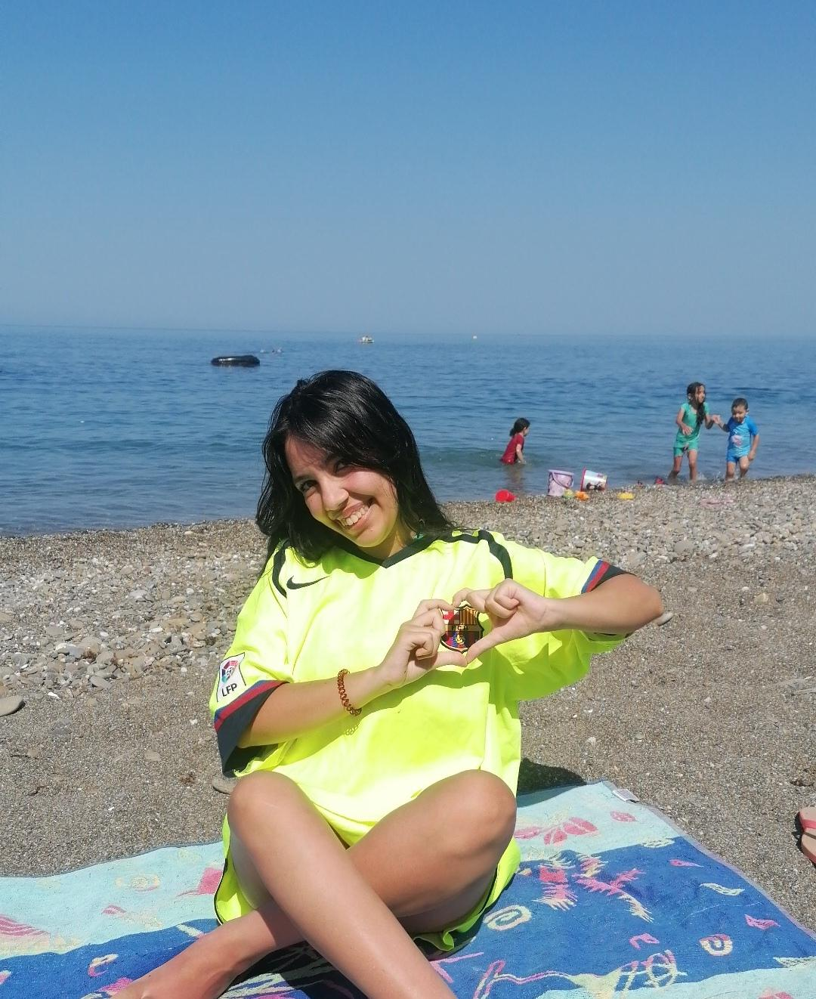
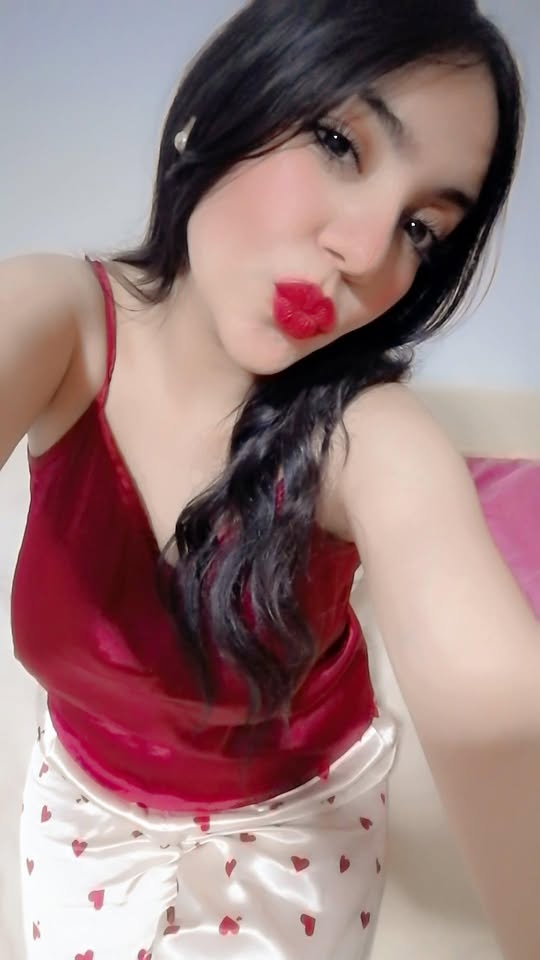
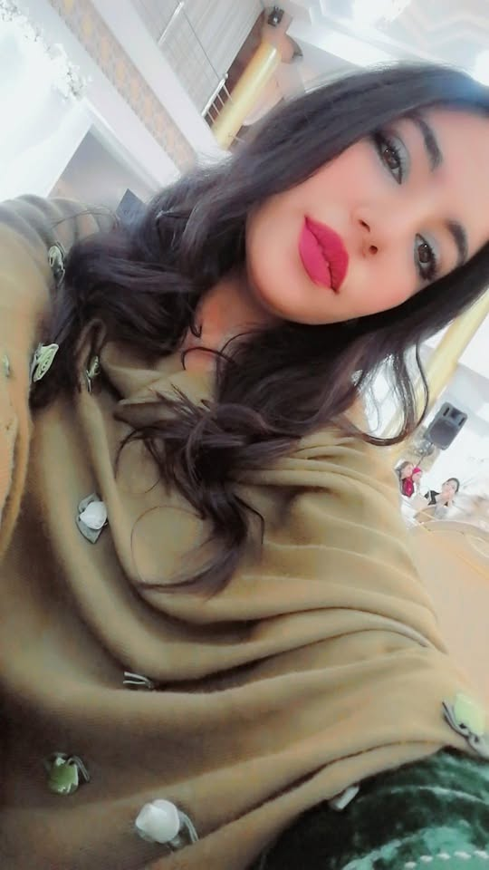

To Wijdane, my favorite human
You're 6 years older than me and somehow you still gave me a chance — as a friend, as a person, as someone worth your time. That's not something everyone does. And I haven't forgotten it.

That face though 🌸
There's something about the way you look that just makes sense — like everything fits exactly where it should. Soft features, warm eyes that already know too much, and a calm in your face that makes the people around you feel safe without you even trying. You're naturally, effortlessly beautiful. The kind that doesn't need a filter.

The strongest soft person I know
You're sweet — genuinely, deeply sweet — but don't let anyone mistake that for weakness. You carry yourself with a quiet strength that shows in everything you do. You work hard, you show up, and you care — really care — which is rarer than people think. That combination? Sweet AND strong? That's not easy to find. That's you.
The 6-year gap that didn't matter
Most people would have looked at the age difference and walked away.
You didn't. You just… showed up. And that changed everything.

Smart in the quiet way
You don't show off what you know — you just use it. That's what makes you sharp. You read people well, you understand things quickly, and you give advice that actually makes sense. Talking to you feels like talking to someone who's already figured out the things most people are still figuring out. I genuinely learn from you. More than you know.

Lucky to have you, for real
Not everyone gets a friend like you — someone who's warm without being fake, fun without being exhausting, and real without being harsh. You made space for me when you didn't have to. And I think about that more than I say. So here it is, written out properly: thank you, Wijdane. You're one of a kind. 🌸